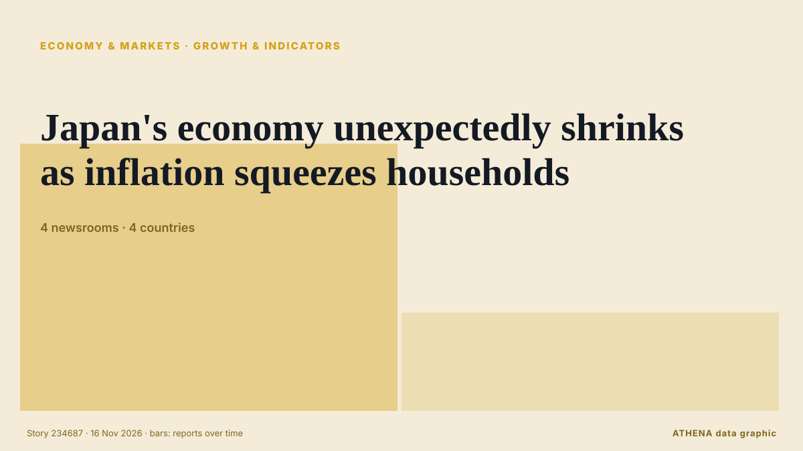

Οικονομία, Χρηματοοικονομικά & Αγορές
ΧορηγούμενοΠαρουσιάζεται από  Cybernetics and Artificial Intelligence Lab Welcome to the Cybernetics and Artificial Intelligence Laboratory, established at the Department of Business Administration of the National and Kapodistrian University of Athens. The lab is headed by Professor Dimitrios Thomakos. The lab aims to do research that can be published in top venues. Our research uses tools and methods of Artificial Intelligence, and lies in the following areas: - Forecasting - Decision making - Cyber security - Finance We are always looking forward to collaborating with exceptional students!
Cybernetics and Artificial Intelligence Lab Welcome to the Cybernetics and Artificial Intelligence Laboratory, established at the Department of Business Administration of the National and Kapodistrian University of Athens. The lab is headed by Professor Dimitrios Thomakos. The lab aims to do research that can be published in top venues. Our research uses tools and methods of Artificial Intelligence, and lies in the following areas: - Forecasting - Decision making - Cyber security - Finance We are always looking forward to collaborating with exceptional students!
Οι τίτλοι των ειδήσεων παρουσιάζονται στα αγγλικά, όπως δημοσιεύτηκαν.
Παρακολούθηση αγορών - επίσημα στοιχεία
Προς τα πού κινούνται τα επίσημα μεγέθη των αγορών - άνοδος, πτώση ή σταθερότητα - με την τελευταία επίσημη τιμή και την ημερομηνία της, και οι ειδήσεις αγορών που επιβεβαίωσε το ATHENA. Επίσημα στοιχεία, όχι τιμές σε πραγματικό χρόνο.
Ενέργεια
| 1 ημέρα | 1 εβδομάδα | 1 μήνας | Επίσημη τιμή | |
|---|---|---|---|---|
| Πετρέλαιο Brent | ▲ | ▲ | ▼ | $92,14/bblΕπίσημα στοιχεία της 11 Νοε 2026 |
| Πετρέλαιο WTI | ▬ | ▼ | ▼ | $89,62/bblΕπίσημα στοιχεία της 11 Νοε 2026 |
| Φυσικό αέριο ΗΠΑ (Henry Hub) | ▬ | ▲ | ▼ | $3,00/MMBtuΕπίσημα στοιχεία της 11 Νοε 2026 |
| Ευρωπαϊκό φυσικό αέριο (1 μήνας · 3 μήνες · 12 μήνες)(1Μ · 3Μ · 12Μ) | ▲ | ▲ | ▲ | $25,49/MMBtuΕπίσημα στοιχεία της 1 Σεπ 2026 |
| Άνθρακας (Αυστραλία) (1 μήνας · 3 μήνες · 12 μήνες)(1Μ · 3Μ · 12Μ) | ▲ | ▲ | ▲ | $153,84/tΕπίσημα στοιχεία της 1 Σεπ 2026 |
Τρόφιμα
| 1 μήνας | 3 μήνες | 12 μήνες | Επίσημη τιμή | |
|---|---|---|---|---|
| Σιτάρι | ▲ | ▲ | ▲ | $246,85/tΕπίσημα στοιχεία της 1 Σεπ 2026 |
Χρηματιστήρια ΗΠΑ
| 1 ημέρα | 1 εβδομάδα | 1 μήνας | Επίσημη τιμή | |
|---|---|---|---|---|
| S&P 500 | ▼ | ▲ | ▼ | Μόνο κατεύθυνση (δείκτης © Cboe)Επίσημα στοιχεία της 13 Νοε 2026 |
| Nasdaq Composite | ▼ | ▲ | ▼ | Μόνο κατεύθυνση (δείκτης © Cboe)Επίσημα στοιχεία της 13 Νοε 2026 |
Επιτόκια, κίνδυνος και δολάριο
| 1 ημέρα | 1 εβδομάδα | 1 μήνας | Επίσημη τιμή | |
|---|---|---|---|---|
| Απόδοση 10ετούς ομολόγου ΗΠΑ | ▲ | ▲ | ▼ | 5,10 %Επίσημα στοιχεία της 12 Νοε 2026 |
| Μεταβλητότητα αγοράς (VIX) | ▲ | ▼ | ▲ | Μόνο κατεύθυνση (δείκτης © Cboe)Επίσημα στοιχεία της 12 Νοε 2026 |
| Δολάριο ΗΠΑ, ευρύς δείκτης | ▲ | ▲ | ▲ | 121,88Επίσημα στοιχεία της 6 Νοε 2026 |
Το ευρώ έναντι άλλων νομισμάτων
| 1 ημέρα | 1 εβδομάδα | 1 μήνας | Επίσημη τιμή | |
|---|---|---|---|---|
| EUR/USD | ▼ | ▼ | ▼ | 1,1052 USDΕπίσημα στοιχεία της 13 Νοε 2026 |
| EUR/GBP | ▬ | ▲ | ▼ | 0,8356 GBPΕπίσημα στοιχεία της 13 Νοε 2026 |
| EUR/CHF | ▲ | ▲ | ▼ | 0,9266 CHFΕπίσημα στοιχεία της 13 Νοε 2026 |
| EUR/JPY | ▬ | ▬ | ▼ | 176,83 JPYΕπίσημα στοιχεία της 13 Νοε 2026 |
| EUR/CNY | ▼ | ▼ | ▼ | 7,3738 CNYΕπίσημα στοιχεία της 13 Νοε 2026 |
| EUR/TRY | ▬ | ▼ | ▲ | 55,667 TRYΕπίσημα στοιχεία της 13 Νοε 2026 |
| EUR/NOK | ▬ | ▲ | ▼ | 10,5695 NOKΕπίσημα στοιχεία της 13 Νοε 2026 |
Πηγές: Υπηρεσία Ενεργειακών Πληροφοριών ΗΠΑ (πετρέλαιο, φυσικό αέριο ΗΠΑ), ΔΝΤ (ευρωπαϊκό φυσικό αέριο, άνθρακας, σιτάρι), Υπουργείο Οικονομικών και Federal Reserve των ΗΠΑ (απόδοση 10ετούς, δείκτης δολαρίου) και Cboe (VIX), S&P Dow Jones Indices (S&P 500), Nasdaq (Nasdaq Composite), μέσω FRED (Federal Reserve Bank of St. Louis)· ισοτιμίες αναφοράς του ευρώ © Ευρωπαϊκή Κεντρική Τράπεζα. Οι τιμές είναι οι τελευταίες επίσημες, με την ημερομηνία τους - όχι τιμές σε πραγματικό χρόνο. Τις κατευθύνσεις τις υπολογίζει το ATHENA.
Κρυπτονομίσματα, ETF και μετοχές στις ειδήσεις
- Binance resumes withdrawals after $6.34 billion crypto hack Κίνδυνος 3.5 15 Νοε
- Russell Brand’s wife shares message from disgraced comedian in prison Κίνδυνος 3.9 15 Νοε
- ASX set for flat start, Nvidia scandal weighs on Wall Street Κίνδυνος 0.9 15 Νοε
- PM vows to work ‘in lockstep’ to revive Welsh Labour as party ‘must take stock’ Κίνδυνος 0.0 15 Νοε
- AI retreat fuels India's stock market comeback in great rotation trade Κίνδυνος 1.2 15 Νοε
- Cryptocurrencies Price Prediction: Bitcoin, Ripple & Crypto – European Wrap 13 November Κίνδυνος 1.5 14 Νοε
- Trump bought Nvidia shares, then cleared path for chip sales to China: Report Κίνδυνος 0.8 14 Νοε
- Nvidia stock suffers longest weekly losing streak since 2012 as market value sinks by $1.7 trillion Κίνδυνος 0.8 14 Νοε
- 'NCP merger talks a laughing stock, damaging Sharad Pawar's image' Κίνδυνος 0.0 14 Νοε
- Turkish investors show interest in buying 49% shares in Akkuyu project — Rosatom Κίνδυνος 0.0 14 Νοε

Ανάπτυξη & δείκτεςJapan's economy unexpectedly shrinks as inflation squeezes households
The first contraction in four quarters underscores Japan's uneven economic recovery, with households still facing persistent inflation despite rising wages. από Free Malaysia Today
| 3 Νοε | 124 |
|---|---|
| 4 Νοε | 114 |
| 5 Νοε | 118 |
| 6 Νοε | 95 |
| 7 Νοε | 42 |
| 8 Νοε | 65 |
| 9 Νοε | 155 |
| 10 Νοε | 129 |
| 11 Νοε | 129 |
| 12 Νοε | 113 |
| 13 Νοε | 70 |
| 14 Νοε | 35 |
| 15 Νοε | 36 |
| 16 Νοε | 1 |
Israeli forces arrest AFP contributor in West Bank
Israeli forces occupied a Palestinian-American’s home in the occupied West Bank for 17 days. από Al Jazeera English
UK weather: Met Office issues snow and ice warning as London drenched by rain
‘There is the potential for some disruptive ice and snow’ - Met Office’s Ethan Douglas. από Evening Standard (London)
Russell Brand’s wife shares message from disgraced comedian in prison
Brand was jailed this week after being found guilty of raping one woman and sexually assaulting three others during his career. από The Irish News (Belfast)
Trump administration kicks off fiscal 2027 with record spending and a massive deficit
The federal government kicked off fiscal 2027 with a record October deficit. από FXStreet
Akhilesh calls Dalits 'damdar', vows to wipe out BJP in UP
Akhilesh Yadav emphasized the importance of the Dalit community in upcoming Uttar Pradesh elections. από Times of India
More Australians failing to make mortgage payments as interest rate rises bite
Data from the Commonwealth Bank of Australia attributed the small increase in the number of people struggling to inflation and rising interest rates. από Sydney Morning Herald
New World Development proposes US$3.2 billion rights issue
Bain Capital has decided against investing in the indebted company. από The Business Times
Pakistan could become world’s sixth-largest economy before 2050: PM Sharif
Dubai: Pakistan could become the world’s sixth-largest economy before 2050, Prime Minister Shehbaz Sharif said on Friday as he called for foreign investment in mineral processing and manufacturing. από Gulf News
Yellow Weather Warning Issued for Heavy Rainfall in Two Regions of Bulgaria
Bulgaria’s national meteorological bureau has issued the Code Orange warning of dangerous weather for several districts for November 13 because. από The Sofia Globe
‘Ramayana 2 will do 10 times more’: Ram Gopal Varma claims budget of part 1 is Rs 800 cr
Filmmaker Ram Gopal Varma has once again showered praise on Namit Malhotra's Ramayana: Part 1. από Deccan Herald
Dubai Police bust gang who recruited people to open bank accounts for investment fraud
Dubai Police have arrested members of a gang accused of investment fraud. από Khaleej Times (working feed)
Gold and silver prices rise on commodity markets
Gold and silver prices have risen on the COMEX commodity exchange in New York. από AzerNews
Anwar meets Carney in Manila, with Malaysia-Canada energy and digital trade on the table
MANILA, Nov 15 — Efforts to expand trade and investment cooperation, particularly in the energy, digital economy a... από Malay Mail
West Bank: Israeli settlers attack Palestinian home, olive harvesters
JENIN: Settlers attacked Palestinian families from the town of Ya’bad, west of Jenin, on Friday while they were harvesting olives, local sources reported. από Arab News
AI retreat fuels India's stock market comeback in great rotation trade
The MSCI India gauge has rebounded 11% from a six-month low set in October, adding more than $400 billion in value and almost erasing this year's losses. από Business Standard
Making waves in markets: Nvidia CEO resigns, CoreWeave beats expectations, Mainfreight exceeds forecasts
Nvidia reports on Tuesday evening and Infratil on Wednesday. από BusinessDesk
Brazil Interest Rate Cuts Stall on US Yields
Brazil's central bank has cut five times this year, but higher US rates and 4.58% inflation shrink its room. από The Rio Times
BOE likely to raise rates further in 2027
LONDON: The Bank of England will probably need to raise interest rates further in 2027, over and above an increase at the next meeting in December, to combat inflation, Bank of England Chief… από Business Recorder
Germany postpones sugar tax and scraps electricity tax cut ahead of budget talks
Germany's proposed plastic tax has also been killed, along with some proposed social benefit cuts, as federal leaders agree to compromises in the 2027 budget. από The Local Germany
Oklahoma AD questions Ole Miss effort; decision to play Sunday 'inexplicable'
Oklahoma AD Roger Denny was critical of the SEC's decision to move the Sooners' home game against Ole Miss to Sunday following Friday's nationwide ground stop. από ESPN
Sudan: Does Your Culture Shape How You Look At Art? What an Eye-Tracking Study in Sudan Revealed
[The Conversation Africa] Today, Old Dongola is an abandoned settlement on the banks of the Nile in northern Sudan. από AllAfrica
Cryptocurrencies Price Prediction: Bitcoin, Ripple & Crypto – European Wrap 13 November
Bitcoin (BTC) is struggling to find support, slipping below $70,000 as multiple headwinds threaten to push the Crypto King lower. από FXStreet
Israel advances plans for 895 new settlement homes across West Bank: Palestinian commission
LONDON: Israeli authorities have advanced 11 settlement expansion plans that would add 895 housing units across the occupied West Bank, alongside industrial and commercial developments, the… από Arab News
Nvidia stock suffers longest weekly losing streak since 2012 as market value sinks by $1.7 trillion
Jensen Huang's resignation added to Nvidia's market woes, with the stock already in a downward slide since early October. από CNBC World
PM Mitsotakis Pledges Double the Eurozone’s Growth in WSJ Interview
Mitsotakis said Greece lost 25% of its GDP during a decade of austerity. από to vima
Zamfara stands still as Gov Lawal hosts First Lady, Remi Tinubu for mega rally
Mrs Tinubu described her visit as a powerful expression of solidarity and compassion, as well as a commitment to women’s welfare and advancement. από Premium Times
Israeli army arrests 10 Palestinians in raids across occupied West Bank
Israeli forces arrest 10 Palestinians, including woman, during raids in Nablus, local sources tell Anadolu. από Anadolu Agency (English)
Cold health alert for three England regions as temperatures plunge below -6C
The UK Health Security Agency (UKHSA) has issued a yellow cold health alert for the North West, North East and Yorkshire from 9pm on Sunday, warning of a greater risk to life for vulnerable people as… από Birmingham Mail
Eating out, commuting get pricier in Baguio, Cordillera in October
Dining out and commuting by public transportation were a bit pricey in October, as shown by inflation rates of 9.3 percent in Baguio City and 9.2 percent in the Cordillera region. από Philippine Daily Inquirer
UN welcomes Kofi Annan’s appearance on new GH¢100 Heritage Banknote
By Nana Karikari, Senior Global Affairs Correspondent The United Nations has commended Ghana’s decision to place former UN Secretary-General Kofi Annan on the country’s newly unveiled GH¢100 banknote. από GBC Ghana Online
Minimum Wage Board for garment workers to meet again on Monday
Board Chairman Syed Azad Subhani, a District and Sessions Judge, will preside over the meeting, convened under Section 139 of the Bangladesh Labour Act, 2006. από The Business Standard (Bangladesh) (working feed)
Greece Short-Term Rental Revenue Rises 8.7% in 2026
Short-term rental revenue in Greece has increased by 8.7% in 2026, driven by higher nightly rates, while occupancy remains broadly stable and direct bookings gain market share. από Greek City Times